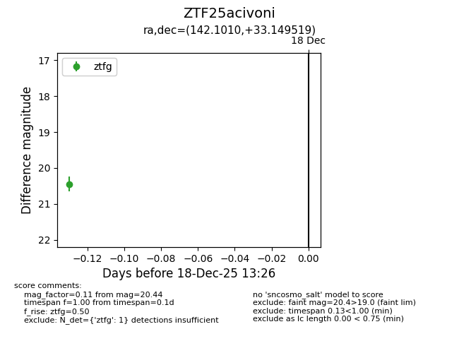
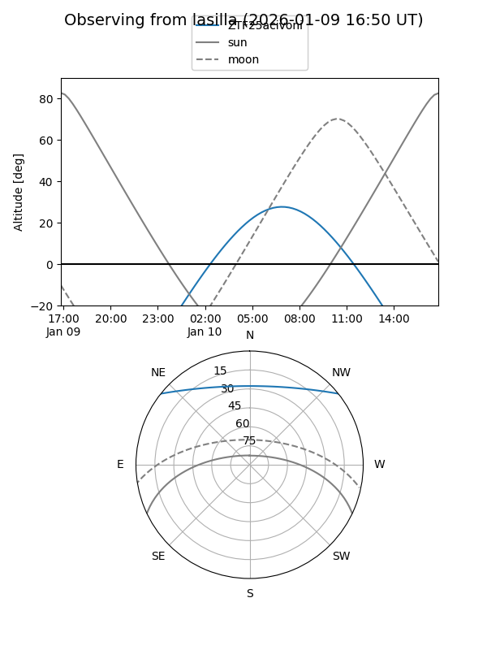
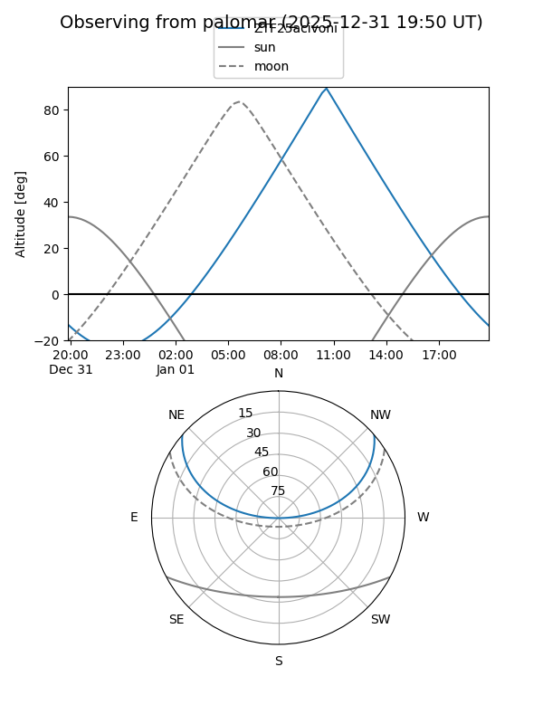
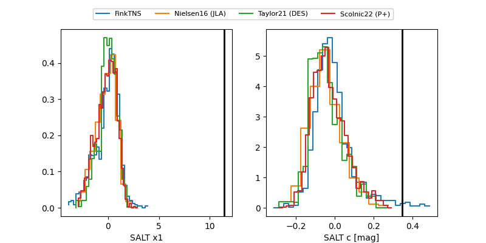

ZTF25acivoni
Target ZTF25acivoni at 2025-12-22 18:11
Aliases and brokers:
FINK: fink-portal.org/ZTF25acivoni
Lasair: lasair-ztf.lsst.ac.uk/objects/ZTF25acivoni
ALeRCE: alerce.online/object/ZTF25acivoni
alt names
ZTF25acivoni (ztf,fink_ztf)
Coordinates:
equatorial (ra, dec) = 142.1010,+33.14952
equatorial (HMS+DMS) = 09:28:24.25,+33:08:58.27
galactic (l, b) = (192.2211,+46.11331)
Flags:
Photometry:
last ztfg=20.40, ztfr=19.83
2 ztfg, 1 ztfr detections
Lightcurve

Visibility


Additional plots
